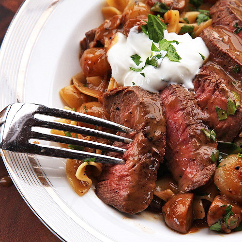
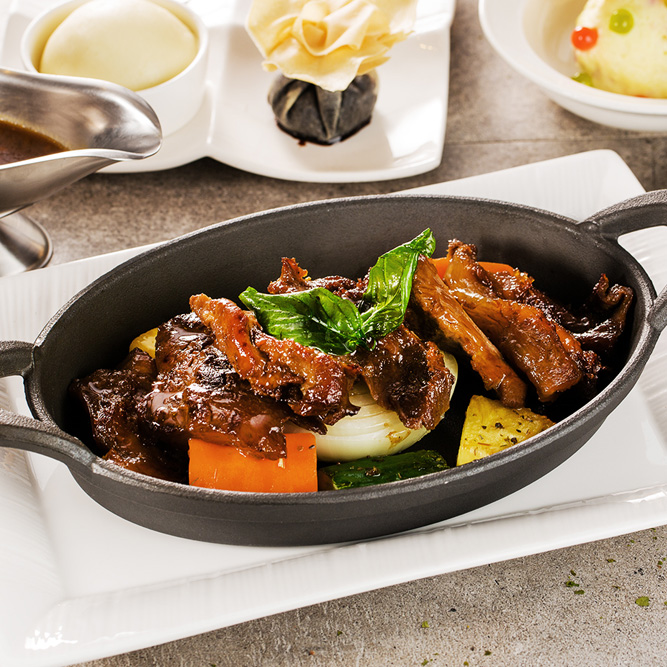

關於我們
2016創立的WPZ Restaurant，多道精緻料理，以熱情入味、時尚熱情的紐約客風格，為你的生活注入新活力，我們提供舒適、明亮、歡愉的西式餐廳，讓每位顧客創新體驗，盡享美味。
經營理念
誠實：對人對事，以誠實為第一要務。
群力：群策群力，團隊精神，發揮相乘的團隊力量。
創新：創意無限，不守舊，敢於向傳統挑戰。
滿意：凡事要讓顧客滿意、讓公司滿意、讓家人滿意、讓周圍所有的人都滿意。

我們的使命
1.捍衛食安，落實源頭管控，打造一個兼具美味與安心的餐飲環境。
2.開創美食共饗平台，引領美食文化體驗及向上提升的生活態度。
3.為台灣人才發展擘劃未來藍圖，提供自我實現夢想的舞台。
我們的願景
立足台灣，將企業文化及品牌精神延伸國際，提供顧客優質的餐飲體驗，成為國際化餐飲集團。為此，將強化國際人員培訓，除持續培育技術等專業性人才，以因應公司未來經營目標外，另為因應公司之未來持續成長，培養組織成員對企業文化之認同，以建立共同價值觀之組織文化，達到永續經營之共同願景。提升廚藝研發創新能力、創造差異化服務，繼而提高產品附加價值，提供顧客物超所值的餐飲服務，與顧客達到雙贏。